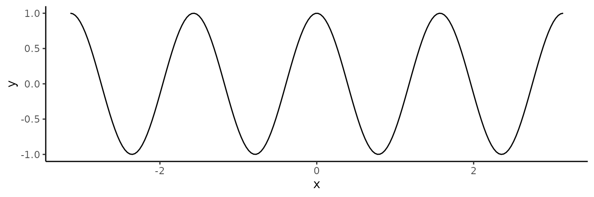
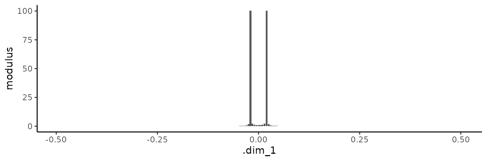
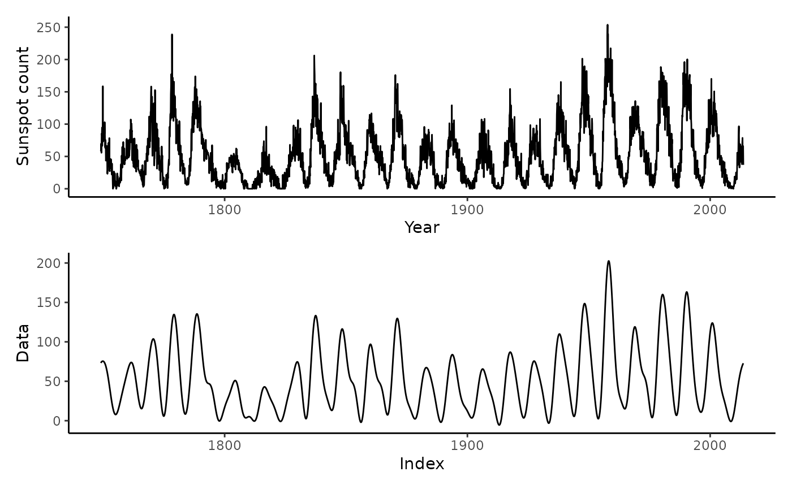
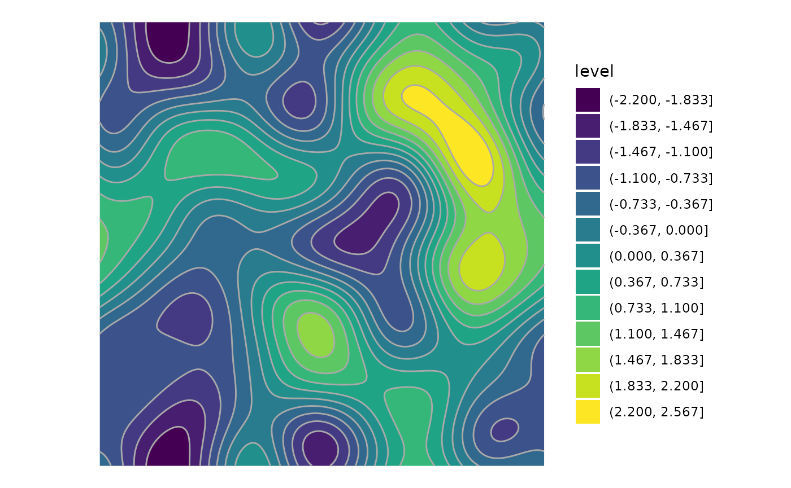

The fftab package provides a tidy interface for Fourier
Transform operations by storing Fourier coefficients and their
associated frequencies in a tabular format (tibble). This
design facilitates the manipulation of spectral data using pipes and
functions from the tidyverse.
We’ll demonstrate the package’s capabilities using reproducible examples.
Setup
Load the package and set the random seed:
The fftab function supports various input types,
including numeric and complex vectors, time series objects, and
multidimensional arrays.
Vector Input
A simple example is the FFT of a numeric vector:
v <- rnorm(8)
v_fft <- fftab(v)
print(v_fft)
#> # A tibble: 8 × 2
#> .dim_1 fx
#> * <dbl> <cpl>
#> 1 0 -2.377+0.000i
#> 2 0.125 -0.526-0.225i
#> 3 0.25 -1.288-3.676i
#> 4 0.375 -2.747+3.093i
#> 5 0.5 1.841+0.000i
#> 6 -0.375 -2.747-3.093i
#> 7 -0.25 -1.288+3.676i
#> 8 -0.125 -0.526+0.225iThe output tibble includes:
-
.dim_1: Normalized frequencies in cycles per unit length. For an even-length vector, the maximum frequency is the Nyquist frequency (0.5). Frequencies wrap around zero, producing negative frequencies. -
fx: Fourier coefficients in complex form.
To facilitate manipulation, you can switch between
representations—complex (cplx), rectangular
(rect), and polar (polr):
v_fft |> to_rect() |> print(n = 3)
#> # A tibble: 8 × 3
#> .dim_1 re im
#> <dbl> <dbl> <dbl>
#> 1 0 -2.38 0
#> 2 0.125 -0.526 -0.225
#> 3 0.25 -1.29 -3.68
#> # ℹ 5 more rows
v_fft |> to_polr() |> print(n = 3)
#> # A tibble: 8 × 3
#> .dim_1 mod arg
#> <dbl> <dbl> <dbl>
#> 1 0 2.38 3.14
#> 2 0.125 0.572 -2.74
#> 3 0.25 3.89 -1.91
#> # ℹ 5 more rows
v_fft |> set_repr(c("polr", "rect", "cplx")) |> print(n = 3)
#> # A tibble: 8 × 6
#> .dim_1 mod arg re im fx
#> <dbl> <dbl> <dbl> <dbl> <dbl> <cpl>
#> 1 0 2.38 3.14 -2.38 2.91e-16 -2.377+2.91e-16i
#> 2 0.125 0.572 -2.74 -0.526 -2.25e- 1 -0.526-2.25e-01i
#> 3 0.25 3.89 -1.91 -1.29 -3.68e+ 0 -1.288-3.68e+00i
#> # ℹ 5 more rowsRetrieve individual components, such as phase or modulus, with
get_* functions:
v_fft |> get_arg()
#> [1] 3.14 -2.74 -1.91 2.30 0.00 -2.30 1.91 2.74These functions work seamlessly across all representations, ensuring consistent outputs.
Warning: When modifying an fftab
object:
- If multiple representations (e.g., complex, polar, rectangular) are present, ensure consistency to avoid ambiguity during the inverse transform.
- Changes to specific columns, such as
arg, do not automatically propagate to other representations. - Adding or deleting rows can lead to nonsensical results when inverting the transform.
Always verify the structure and contents of an fftab
object after modifications to ensure it remains valid.
Complex Input
The fftab object tracks whether the input is real or
complex, ensuring correct handling in inverse transforms:
cplx <- complex(modulus = rnorm(4), argument = runif(4, 0, pi))
cbind(orig = cplx, reconst = cplx |> fftab() |> ifftab())
#> orig reconst
#> [1,] -0.2969-0.374i -0.2969-0.374i
#> [2,] -0.6677-0.742i -0.6677-0.742i
#> [3,] -0.6465-0.430i -0.6465-0.430i
#> [4,] 0.0481+0.043i 0.0481+0.043iFor real-valued input returns real-valued output when the transform is inverted.
real_v <- runif(4)
cbind(orig = real_v, reconst = real_v |> fftab() |> ifftab())
#> orig reconst
#> [1,] 0.8313 0.8313
#> [2,] 0.0458 0.0458
#> [3,] 0.4561 0.4561
#> [4,] 0.2652 0.2652Time Series Input
Time series attributes are maintained by fftab and used
to restore the original object when passed to ifftab:
sunspot.month |> fftab() |> ifftab() |> str()
#> Time-Series [1:3177] from 1749 to 2014: 58 62.6 70 55.7 85 ...Time series objects in R include implicit units and a frequency
attribute. For example, the sunspot.month dataset
represents monthly counts spanning from 1749 to 2014. The sampling
frequency (12) corresponds to cycles per year:
sunspot.month |> fftab() |> dplyr::filter(abs(.dim_1) > 5.99)
#> # A tibble: 6 × 2
#> .dim_1 fx
#> <dbl> <cpl>
#> 1 5.99 -43.3+449i
#> 2 5.99 662.4-291i
#> 3 6.00 453.3-903i
#> 4 -6.00 453.3+903i
#> 5 -5.99 662.4+291i
#> 6 -5.99 -43.3-449iHere, .dim_1 contains frequencies in cycles per year, so
the Nyquist frequency will be output as 6 cycles per year and not
cycle per step as would be the case when analyzing a vector without
frequency information. In the case above, the sequence is of odd-length.
Owing to rounding during formatting, the highest frequencies are shown
as 6.00, but are actually slightly smaller This output illustrates both
filtering with dplyr::filter and conjugate symmetry with
real inputs.
Array Input
Arrays retain their dimensions through the Fourier Transform:
ra <- matrix(rnorm(9), 3)
ra |> fftab() |> to_polr()
#> # A tibble: 9 × 4
#> .dim_1 .dim_2 mod arg
#> <dbl> <dbl> <dbl> <dbl>
#> 1 0 0 0.875 3.14
#> 2 0.333 0 3.02 -0.511
#> 3 -0.333 0 3.02 0.511
#> 4 0 0.333 3.78 -2.47
#> 5 0.333 0.333 1.73 -1.79
#> 6 -0.333 0.333 3.56 -1.91
#> 7 0 -0.333 3.78 2.47
#> 8 0.333 -0.333 3.56 1.91
#> 9 -0.333 -0.333 1.73 1.79
ra |> fftab() |> ifftab()
#> [,1] [,2] [,3]
#> [1,] -0.511 2.416 -0.441
#> [2,] -0.911 0.134 0.460
#> [3,] -0.837 -0.491 -0.694Example 1: Applying a Phase Shift
The polar representation allows manipulation of phase information. Let’s create a sinusoid and examine it:
s1 <- seq(-pi, pi, length.out = 200) |>
tibble::as_tibble() |>
dplyr::mutate(x = value, y = cos(4 * value), treatment = "original", .keep = "none")
ggplot(s1) +
geom_line(aes(x = x, y = y)) +
theme_classic()
Perform the FFT and plot the results:

To shift the signal, adjust the phase (arg) while
respecting conjugate symmetry:
s1_fft |>
dplyr::mutate(arg = dplyr::case_when(
.dim_1 == 0 ~ arg, # DC component
.dim_1 == 0.5 ~ arg, # Nyquist frequency
.dim_1 > 0 ~ arg - pi, # Positive frequencies
.dim_1 < 0 ~ arg + pi # Conjugate negative frequencies
)) ->
s2_fftReconstruct and compare the shifted signal to the original:
s1 |>
dplyr::mutate(y = s2_fft |> ifftab(), treatment = "shifted") |>
dplyr::bind_rows(s1) ->
combined
ggplot(combined) +
aes(x = x, y = y, color = treatment) +
geom_line(lwd = 1, alpha = 0.5) +
scale_color_manual(values = c("darkblue", "darkred")) +
theme_classic()Example 2: Time Series Filtering
To denoise the sunspot.month data, we suppress
high-frequency components:
ggplot(fortify(sunspot.month)) +
geom_line(aes(x = Index, y = Data)) +
ylab("Sunspot count") +
xlab("Year") +
theme_classic() ->
p1
sunspot.month |>
fftab() |>
to_polr() |>
dplyr::mutate(mod = ifelse(abs(.dim_1) > 0.2, 0, mod)) |>
ifftab() ->
smoothed
ggplot(fortify(smoothed)) +
geom_line(aes(x = Index, y = Data)) +
theme_classic() ->
p2
p1 / p2
The dplyr::mutate call zeros out the magnitudes of any
components with periodicity of 5 years or fewer.
Example 3: 2D Gaussian Autocorrelation
A gaussian kernel in the frequency domain has mangnitudes
where
is the sum of squared frequencies across dimensions. fftab
provides functions for computing the L2 norm and squared L2 norm of the
frequencies in any number of dimensions allowing easy access to these
numbers in computations.
sigma <- 64
scale_fac <- -pi^2 * sigma^2
matrix(rnorm(512 * 512), 512) |>
fftab() |>
to_polr() |>
add_l2sq() |>
dplyr::mutate(mod = mod * exp(scale_fac * l2sq)) |>
ifftab() ->
gauss_acf
tidyr::expand_grid(x = 1:512, y = 1:512) |>
tibble::add_column(z = gauss_acf |> as.vector() |> scale()) |>
ggplot() +
aes(x = x, y = y, z = z) +
geom_contour_filled(bins = 16) +
geom_contour(bins = 16, color = "darkgrey") +
coord_equal() +
theme_void()